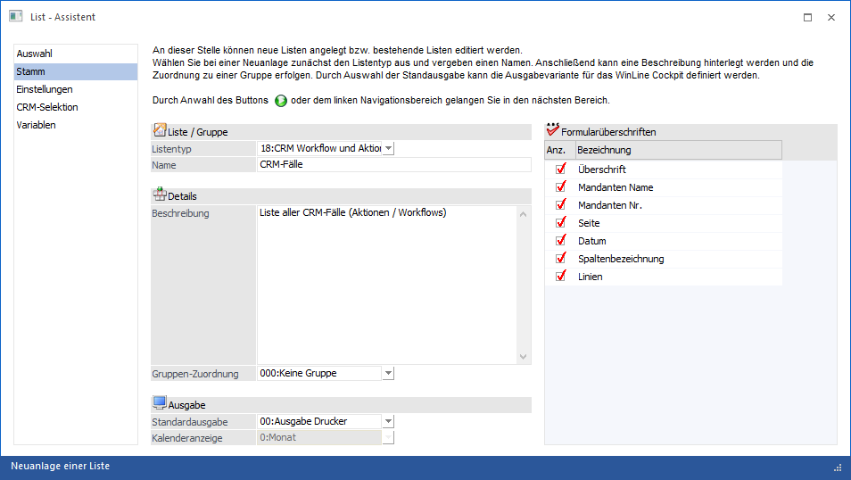
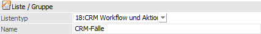
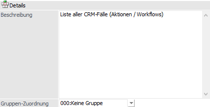
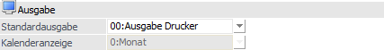
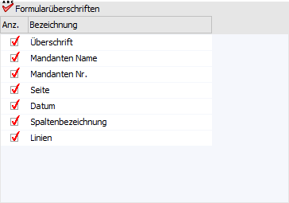

Im Bereich "Stamm" werden die Grundeinstellungen der Liste definiert.

Folgende Einstellungen können vorgenommen werden:
Liste / Gruppe

Ø Listentyp
Aus der Auswahlliste kann der Datenbereich ausgewählt werden, für den eine Liste erzeugt werden soll. Dabei stehen folgende Datenbereiche zur Verfügung:
ü 00 - Kontenstamm (Sachkonten)
ü 01 - Debitorenstamm (Kunden)
ü 02 - Kreditorenstamm (Lieferanten)
ü 03 - Fakturen O.P. (Offene Posten ohne (Teil)Zahlungen bzw. Vorauszahlungen)
ü 04 - Artikeldatei (Artikelstamm)
ü 05 - Jahresjournal (Buchungsjournal)
ü 06 - Statistik (Verkaufsstatistik)
ü 07 - BKZ-Stamm
ü 08 - Anbu Stamm
ü 09 - Arbeitnehmerstamm (Arbeitnehmer- und Mitarbeiterstamm)
ü 10 - Kostenjournal
ü 13 - Interessenten (Kundeninteressenten)
ü 14 - Anfragelieferanten
ü 15 - Kostenstamm (Kostenstellen, Kostenarten und Kostenträger)
ü 16 - CRM Workflows
ü 17 - CRM Aktionen
ü 18 - CRM Workflows und Aktionen
ü 19 - Belegzeilen
ü 20 - Adressbuch (Auswertung über alle Adressen; Personenkonten, Kontakte, AN, Vertreter, zusammengefasst in einer View, wo nur die Felder angedruckt werden können, die in allen Datensätzen vorhanden sind)
ü 21 - Projekte
ü 22 - Kampagnen/Merklisten
ü 23 - Adressen (Auswertung über Personenkonten und Kontakte)
ü 24 - Produktion
ü 25 - Projekterfassung
ü 26 - PDMS
ü 27 - Zeitauswertung
ü 28 - Belege
ü 29 - Datenquellen
Hinweis 1
Beim Typ "20 - Adressbuch" können alle Adressen ausgewertet werden. Über den List-Typ "23 - Adressen" können Kontakte und die Ansprechpartner der Personenkonten auf Basis der Kontaktetabelle ausgewertet werden.
Hinweis 2
Wenn der List - Assistent in der Applikation WinLine INFO aufgerufen wird, dann stehen nur die folgenden Datenbereiche zur Verfügung:
ü 16 - CRM Fälle
ü 17 - CRM Aktionen
ü 18 - CRM Workflows und Aktionen
Ø Name
Hier kann der Name der Liste angegeben, die angelegt werden sollen. Der Name muss nicht eindeutig sein (es können auch mehrere Listen mit dem gleichen Namen angelegt werden).
Details

Ø Beschreibung
Hier kann eine Beschreibung der Liste eingegeben werden.
Besonderheit bei Neuanlage
Bei der Neuanlage einer Liste kann über das Feld "Bezeichnung" eine Liste verdoppelt (kopiert) werden. Hierfür wird die Taste F9 gedrückt und aus dem "List - Matchcode" die gewünschte Liste ausgewählt.
Ø Gruppen-Zuordnung
Wenn für den ausgewählten Listentyp bereits Listengruppen definiert wurden, dann kann hier entschieden werden, in welcher Gruppe die neu angelegte Liste abgespeichert werden soll. Aus der Auswahlliste kann entweder die Option "000 - Keine Gruppe" oder die gewünschte Gruppe ausgewählt werden.
Ausgabe

Ø Standardausgabe
Aus der Auswahlliste kann ausgewählt werden, wie die Ausgabe der Liste aus dem WinLine Cockpit heraus erfolgen soll. Dabei stehen die folgenden Optionen zur Verfügung:
ü 00 - Ausgabe Drucker
ü 01 - Ausgabe Bildschirm
ü 02 - Ausgabe WinCalc
ü 03 - Ausgabe Kalender (Informationen zu den unterstützen Listtypen entnehmen Sie bitte dem Kapitel "WinLine Kalender")
ü 04 - Tabelle
ü 05 - Cube erzeugen
ü 06 - Excel Pivot
ü 07 - Grafik
ü 08 - XLSX
ü 11 - Power Report
ü 15 - Kanban (Informationen zu den unterstützen Listtypen entnehmen Sie bitte den Kapiteln "Stammdaten-Kanban" und "CRM-Kanban")
Ø Kalenderanzeige
Wenn die Standardausgabe "03 - Ausgabe Kalender" ausgewählt wurde, kann entschieden werden, in welcher Ansicht der Kalender dargestellt werden soll. Hierfür stehen folgende Optionen zur Verfügung:
ü 0 - Monat
ü 1 - Woche
ü 2 - Tag
ü 3 - Arbeitswoche
Formularüberschriften

Ø Formularüberschriften
Für jede Liste kann definiert werden, inwieweit die Kopfdaten für eine Ausgabe auf Bildschirm bzw. Drucker mit ausgegeben werden sollen. Die Höhe des Kopfs im Formular wird in Abhängigkeit der Optionen angepasst. Hierbei stehen folgenden Optionen zur Auswahl:
ü Überschrift
ü Mandanten Name
ü Mandanten Nr.
ü Seite
ü Datum
ü Spaltenbezeichnung
ü Linien